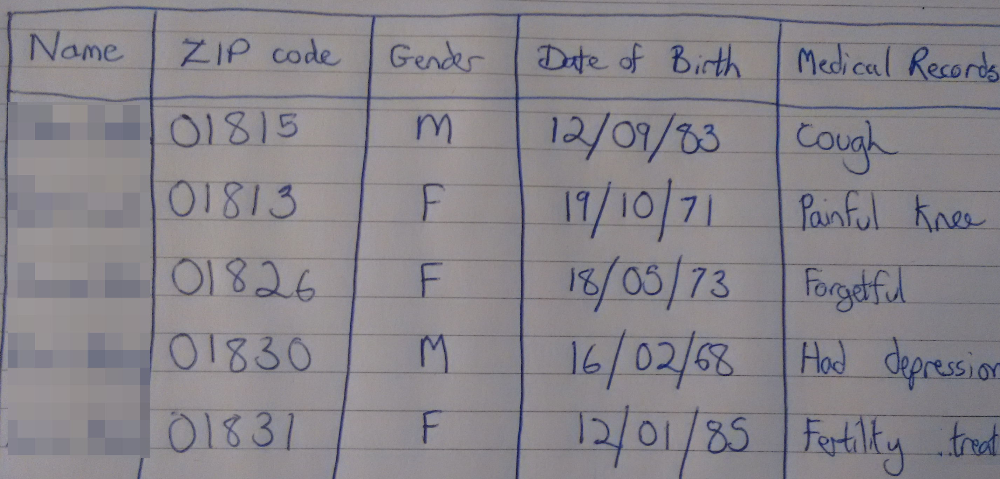

Explaining
Differential Privacy
Presented by Mike Smith
Quick Note!
I'm presenting other people's work today.
See The Algorithmic Foundations of Differential Privacy by Dwork and Roth for a rigorous introdution to the framework.
Anonymity Gone Wrong
In the mid-1990s the Massachusetts Group Insurance Commission released 'anonymised' health records for state employees.

Anonymity Gone Wrong
"William Weld, then Governor of Massachusetts, assured the public that GIC had protected patient privacy by deleting identifiers."
Broken Promises of Privacy, Paul Ohm
Anonymity Gone Wrong
The data was 'anonymised' by removing names. Other identifying columns remained. 
Anonymity Gone Wrong
 Latanya Sweeney used the voter rolls (which contain the name, address, ZIP code, date of birth and sex of every voter) to find Governor Weld's medical records...
Latanya Sweeney used the voter rolls (which contain the name, address, ZIP code, date of birth and sex of every voter) to find Governor Weld's medical records...
...which she posted to him.
Anonymity Gone Wrong
This is known as a linkage attack:
An attack that uses auxiliary information to compromise privacy in a database.
Anonymity Gone Wrong
Note: Although a convient story about privacy, how many people were really at risk from re-identification in this database is still being debated.
The UK Census
The Office for National Statisticss
An attack that uses auxiliary information to compromise privacy in a database.
Vertical Slides
Slides can be nested inside of each other.
Use the Space key to navigate through all slides.
Basement Level 1
Nested slides are useful for adding additional detail underneath a high level horizontal slide.
Basement Level 2
That's it, time to go back up.
Slides
Not a coder? Not a problem. There's a fully-featured visual editor for authoring these, try it out at http://slides.com.
Point of View
Press ESC to enter the slide overview.
Hold down alt and click on any element to zoom in on it using zoom.js. Alt + click anywhere to zoom back out.
Touch Optimized
Presentations look great on touch devices, like mobile phones and tablets. Simply swipe through your slides.
Fragments
Hit the next arrow...
... to step through ...
... a fragmented slide.
Fragment Styles
There's different types of fragments, like:
grow
shrink
fade-out
current-visible
highlight-red
highlight-blue
Transition Styles
You can select from different transitions, like:
None -
Fade -
Slide -
Convex -
Concave -
Zoom
Themes
reveal.js comes with a few themes built in:
Black (default) -
White -
League -
Sky -
Beige -
Simple
Serif -
Blood -
Night -
Moon -
Solarized
Slide Backgrounds
Set data-background="#dddddd" on a slide to change the background color. All CSS color formats are supported.
Image Backgrounds
<section data-background="image.png">Tiled Backgrounds
<section data-background="image.png" data-background-repeat="repeat" data-background-size="100px">Video Backgrounds
<section data-background-video="video.mp4,video.webm">... and GIFs!
Background Transitions
Different background transitions are available via the backgroundTransition option. This one's called "zoom".
Reveal.configure({ backgroundTransition: 'zoom' })Background Transitions
You can override background transitions per-slide.
<section data-background-transition="zoom">Pretty Code
function linkify( selector ) {
if( supports3DTransforms ) {
var nodes = document.querySelectorAll( selector );
for( var i = 0, len = nodes.length; i < len; i++ ) {
var node = nodes[i];
if( !node.className ) {
node.className += ' roll';
}
}
}
}
Code syntax highlighting courtesy of highlight.js.
Marvelous List
- No order here
- Or here
- Or here
- Or here
Fantastic Ordered List
- One is smaller than...
- Two is smaller than...
- Three!
Tabular Tables
| Item | Value | Quantity |
|---|---|---|
| Apples | $1 | 7 |
| Lemonade | $2 | 18 |
| Bread | $3 | 2 |
Clever Quotes
These guys come in two forms, inline:
“The nice thing about standards is that there are so many to choose from”
and block:
“For years there has been a theory that millions of monkeys typing at random on millions of typewriters would reproduce the entire works of Shakespeare. The Internet has proven this theory to be untrue.”
Intergalactic Interconnections
You can link between slides internally, like this.
Speaker View
There's a speaker view. It includes a timer, preview of the upcoming slide as well as your speaker notes.
Press the S key to try it out.
Export to PDF
Presentations can be exported to PDF, here's an example:
Global State
Set data-state="something" on a slide and "something"
will be added as a class to the document element when the slide is open. This lets you
apply broader style changes, like switching the page background.
State Events
Additionally custom events can be triggered on a per slide basis by binding to the data-state name.
Reveal.addEventListener( 'customevent', function() {
console.log( '"customevent" has fired' );
} );
References
http://papers.ssrn.com/sol3/papers.cfm?abstract_id=2076397 https://c.o0bg.com/rf/image_960w/Boston/2011-2020/2015/05/29/BostonGlobe.com/Business/Images/MassMutual_04.jpg https://c.o0bg.com/rf/image_960w/Boston/2011-2020/2014/10/20/BostonGlobe.com/Metro/Images/Gov.%20Bill%20Weld%201-100425.jpg https://epic.org/privacy/reidentification/ohm_article.pdf http://healthaffairs.org/blog/2012/08/10/the-debate-over-re-identification-of-health-information-what-do-we-risk/ http://randomwalker.info/publications/no-silver-bullet-de-identification.pdf http://www.gov.harvard.edu/files/Sweeney6crop.jpg
Much more
- Right-to-left support
- Extensive JavaScript API
- Auto-progression
- Parallax backgrounds
- Custom keyboard bindings